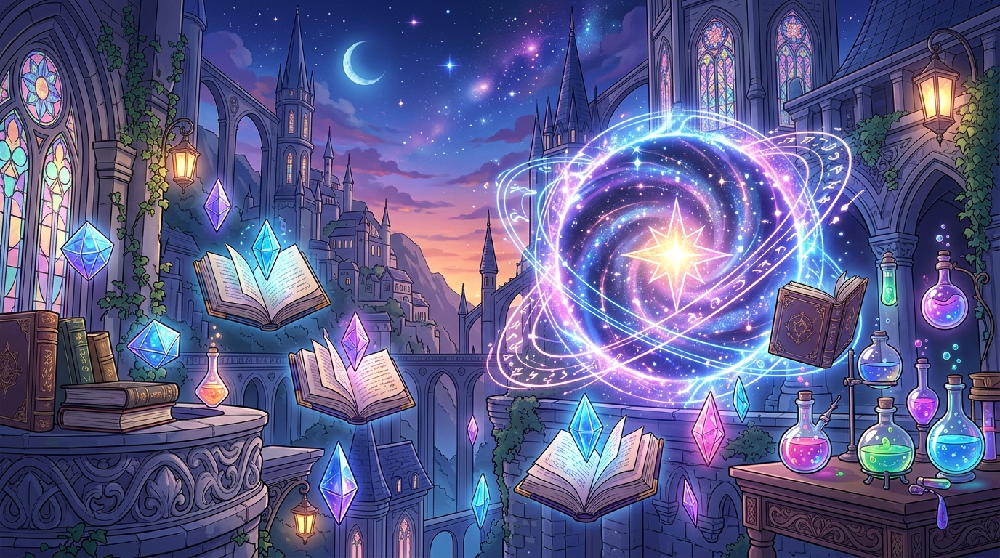
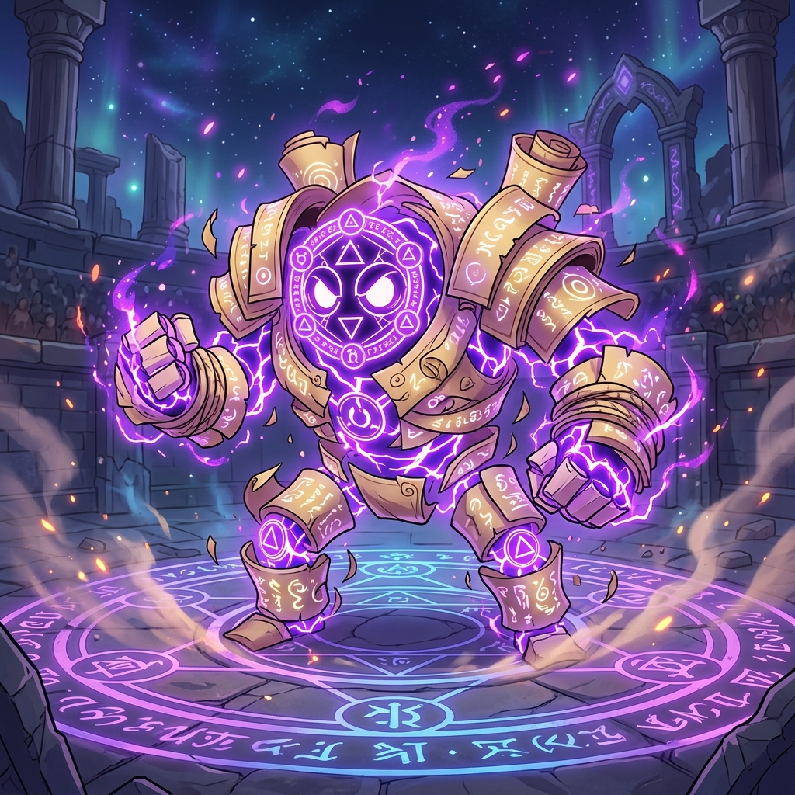

把不會的考題，煉成你的升級經驗值！
遇到段考或模擬考不會寫的題目嗎？前往「⚗️ 錯題煉金工坊」輸入題目或觀念，系統會立即剖析破題口訣並生成 4 道同型變體練習題，讓你化身魔導師在 RPG 戰鬥中擊破弱點！
今日學院懸賞任務
考卷哪一題不會？馬上變出練習題！
輸入題目文字或選擇常錯觀念，1 秒生成「觀念診斷＋基礎暖身＋同型變換＋會考陷阱」4 連戰！
🗺️ 五大考科試煉地下城
選擇任一科目與單元，立即進入 RPG 回合制魔王對決評量（目前篩選：全學年題庫）
錯題煉金工坊：針對不會的題目生成專屬練習
把你在學校小考、段考或模擬考不會的題目貼進來（或點選下方熱門魔王考點），煉金陣會幫你拆解「核心觀念與解題口訣」，並即時生成 4 道由淺入深的相似變體練習題！
運用 Google Gemini 3.5 Flash Lite 深度推理出題，自動解析卡關核心並生成 4 道素養單選題！
 🛡️ 護盾守護中
🛡️ 護盾守護中

-25 HP!弱點屬性：邏輯推演與精準判讀
試煉大捷！成功擊破守門魔王
📓 錯題封印書（個人弱點題庫）
所有在戰鬥中答錯或手動封印的題目都會收錄在此。你可以直接點擊「⚗️ 生成同型延伸練習」，讓系統針對該錯題衍生 4 道新題目幫你徹底搞懂！
📊 勇者五科戰力雷達圖
根據你的答題正確率與錯題煉金次數即時更新
🏪 學院鍊金道具屋
持有星幣：280 🪙使用答題賺取的星幣購買輔助秘藥，在魔王戰中助你一臂之力！
🏆 榮譽徽章殿堂
個人學習歷程與試煉戰果
紀錄您在星耀學院完成的所有地下城試煉、Boss 決戰與 AI 衍生題評量成績。登入 Google 帳號後將自動即時同步至雲端！
0
0%
+0
0 🪙
| 試煉項目 / 關卡 | 科目領域 | 得分 / 總題數 | 正確率 | 評級 | 完成時間 | 操作 |
|---|
全校學員學習歷程監控與大數據分析
此視圖僅對 config.js 中授權的管理者 Google 帳號開放，可即時查看所有學員的評量成果與錯題弱點。
0
跨科目歷次試煉總計0
不重複 Google 帳號0%
全校整體學習精熟度0 EXP
學習遊戲化激勵總量| 學員姓名與信箱 | 測驗關卡 / 主題 | 科目 | 得分 / 題數 | 正確率 | 評級 | 測驗時間 | 明細 |
|---|
系統設定與雲端金鑰 (BYOK)
專為 GitHub 開源與 GitHub Pages 免費部署設計
設定您的 Google AI Studio API Key，出題由瀏覽器前端直接請求 Gemini 3.5 Flash Lite，開源維護者與使用者互不干擾額度。
若您在 GitHub Pages 部署時不想將 config.js commit 進公開倉庫，您可以在此貼上 Firebase 憑證，系統將保存在此瀏覽器本機：
當您部署到 GitHub Pages（例如：）時，務必到 Firebase Console 加入授權網域，否則 Google 登入會出現 auth/unauthorized-domain 錯誤！
- 前往 Firebase 控制台 進入您的專案。
- 點選左側選單「Authentication」>「設定 (Settings)」頁籤。
- 在「已授權網域 (Authorized domains)」點選「新增網域」。
- 貼上您的 GitHub Pages 網域：